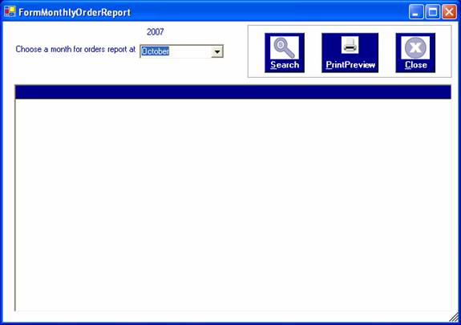
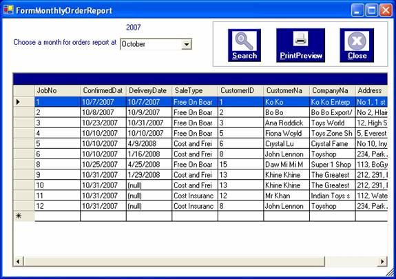
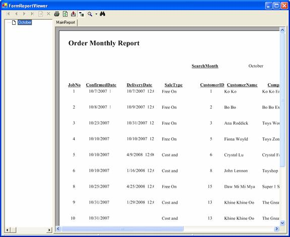

How to process searching for monthly order receipt report
After you successfully log in to the system as a manager or an administrator, you can access annual search report by choosing the required year in the form.
To open the form, click on the Search Menu and choose the "Monthly OrderReceipt Report" . The "Monthly OrderReceipt Form" will be appeared.
To browse the list of order receipt for a month, choose a month from the combo box.

Then, click "Search" button or "Alt+S" to view the information of Order Receipts for October.

To view as a report format for printing out, click "Print Preview" button or "Alt+P" .

To close this form, click "Close" button or "Alt+C".